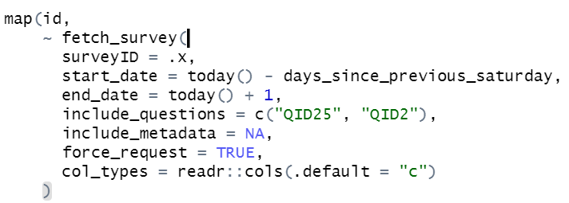

6 Servers
6.1 Data Analysis Needs
6.1.1 Platform for Interactive Applications
There are three options for hosting applications (scroll to bottom for comparison). The center option is 50% off for academic institutions.
6.1.1.1 No Cash Cost and Internal
The left-most option is the one we host ourselves. There are two options to do this.
- On a Linux distribution using the administrator’s guide. If we want applications to be used by multiple people at the same time (e.g. Claudia and Kristen), this is not the best. A response on StackOverflow regarding concurrent use describes how “with this option you can find your users hitting multiple times the inputs or interactive outputs and the app seeming stuck”. But this should be fine for now. We can co-ordinate to have one person at a time using each application.
- Using Java and Docker containers. We get LDAP authentication, no limits on concurrent usage. I’m not experienced with Docker but happy to learn.
This may be cash-less and avoid requiring approval from CCS, but it creates hours (and thus costs) of set-up, maintenance, de-bugging, etc.
6.1.1.2 Cheap and External
I am already using the right-most option Shinyapps.io. This is hosting the snow shovel routes dashboard that self-updates daily. The free option has no user-authentication. I.e. this link is available to anyone. If we pay $100/month, we can have user-authentication. The data is still hosted on an external server by the company Posit. (This company produces the open-source tools for R. Services like these is how they make money.) There is no letter of standing of security procedures apart from a page on security compliance.
6.1.1.3 Not Cheap and External, But Comprehensive
The center option $7500/year (academic pricing) is a comprehensive service, where not just hosting applications is possible, but also:
Scheduling and managing repeated tasks/jobs more easily than using Windows Task Scheduler or Cron.
Providing a website for us where all static reports, books, and parameterized reports I generate are organized, shared, time-stamped, versioned, etc. For parameterized reports, users apart from me can adjust parameters, like below. This is more efficient than someone asking for me to re-run and share a report with different parameters.
User access limits, automatic emailing.
Again, the company Posit hosts the data and this is the page on security compliance.
A last option is to make the applications into executable programs through Electron and RInno but these projects are dormant/or have mixed reviews regarding success.
6.1.2 A Way to Access (a Server with) Up-To-Date Data
Currently when I need up-to-date data, I ask Li to set-up automatic emails. This works for small exports like the CP_ESA report:
I download it, throw it into a folder, and run code to process it.
I’m concerned this method will not scale over-time. For two reasons:
- If an application or report relies on up-to-date data like the snow shovel routes dashboard that self-updates daily, it is more set-and-forget, self-sustaining, and less error-prone to have data hosted somewhere. In the case of the shovel routes, data is hosted on Qualtrics’ servers.
- Certain files I need may be too large or add complexity to code in order to avoid duplication. E.g. 2023’s employee sick transactions, bi-weekly for an application so Stephany can see everyone’s sick occasions. Unlike the ESA data, I cannot receive only 2-weeks worth of data and throw it into a folder. Transaction data gets regularly corrected retroactively. I need the full 2023 data, regularly.
Basically a similar code interface to Qualtrics’ but for Directline would be best. E.g. when I interface to Qualtrics, I can query data using an R function like

If it weren’t for this function, I’d need to manually use the Qualtrics’ website to download data, filter it there or elsewhere, pick the columns there or elsewhere, each day.
6.1.2.1 Megamation API
They said we can write programs to pull data from their API into our own SQL database on-premise. I am not familiar with SQL, besides that all the filtering, data-cleaning done with SQL code is covered by R. We may not even need MySQL. Perhaps just R code to be able to pull data straight from Directline.
They mentioned these limits:
Max. load of API is 50MB
Request can’t exceed 120 seconds
They don’t concern me, as for now I don’t see us pulling big data through the API.